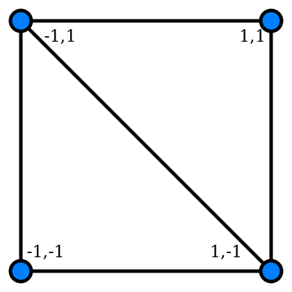
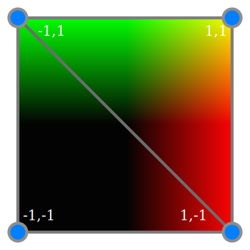

Felix Palmer | @pheeelicks | www.pheelicks.com
Felix Palmer | @pheeelicks | www.pheelicks.com
canvas for a WebGL contextquad to rendervertex & fragmentuniforms and attributescanvas elementvar canvas = document.createElement( 'canvas' );
canvas.width = container.offsetWidth;
canvas.height = container.offsetHeight;
container.appendChild( canvas );
var gl = canvas.getContext( 'webgl' );
quad.vertices = new Float32Array( [
-1.0, -1.0, 1.0, -1.0, -1.0, 1.0, // 1st triangle
-1.0, 1.0, 1.0, -1.0, 1.0, 1.0 // 2nd triangle
] );

attribute vec2 aCoordinate;
varying vec2 vCoordinate;
void main() {
vCoordinate = aCoordinate;
gl_Position = vec4( aCoordinate, 0, 1 );
}
varying vec2 vCoordinate;
void main() {
gl_FragColor = vec4( vCoordinate, 0.0, 1.0 );
}

uniform global informationvarying flow from vertex to fragment shader, interpolatedattribute per vertex informationcanvas for a WebGL contextquad to rendervertex & fragmentuniforms and attributescanvas elementFelix Palmer | @pheeelicks | www.pheelicks.com
@pheeelicks